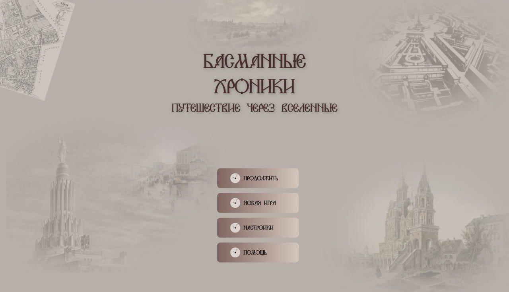

Жанр и особенности
Интерактивная нарративная игра в жанре point-and-click, где игрок погружается в атмосферу Москвы начала XX века. Вас ждут увлекательные путешествия по историческим локациям — от Кремля до малоизвестных улиц, диалоги с персонажами, головоломки и задания, влияющие на развитие сюжета.
Каждое ваше решение открывает новые сюжетные линии и концовки. Простое управление делает игру доступной даже тем, кто раньше не играл.

Цели проекта
1. Создание уникального игрового опыта:
• Разработать увлекательный и интерактивный сюжет с элементами времени и альтернативных вселенных.
• Установить связи между историческими событиями и игровым процессом.
2. Образовательная цель
Знакомство с историей достопримечательностей Москвы:
• Обеспечить игрокам доступ к информации о значимых исторических объектах, их происхождении и значении, а также о культурном контексте, в котором они были построены.
3. Визуальная цель
Создание визуализации альтернативных исторических проектов:
• Разработать графические элементы, которые показывали бы, как могли бы выглядеть известные достопримечательности, если бы реализовались проекты начало XX века. Это станет основным привлекающим элементом игры.
4. Интерактивная цель
Разработка механик взаимодействия с историческими местами:
• Создать интерактивные локации, позволяющие игрокам не только исследовать, но и взаимодействовать с достопримечательностями, например, выполнять квесты, находить предметы и вводить интересные факты.
5. Культурно-историческая цель
Погружение в культуру начало XX века:
• Разработать сценарий и персонажей, которые отражали бы дух времени, позволяя игрокам узнать о социальных, политических и культурных аспектах Москвы начало XX века через взаимодействие с историческими личностями и событиями.
6. Развлекательная цель
Создание увлекательного игрового процесса:
• Обеспечить игрокам интересный и захватывающий опыт, балансируя между образовательным контентом и развлекательными элементами, такими как квесты, головоломки и возможности для принятия решений, влияющих на ход игры.
7. Визуальное оформление и атмосфера
Создание уникальной атмосферы исторической, современной и альтернативной Москвы:
>
Список исполнителей:
1. Антипова Анастасия Максимовна
2. Бартенов Максим Максимович
3. Белай Александр Валерьевич
4. Борисова Ксения Павловна
5. Варушкин Тимофей Александрович
6. Гайнутдинов Рамат Азатович
7. Идрисов Тамерлан Рамиз оглы
8. Исаева Софья Амирановна
9. Казакова Диана Александровна
10. Котова Анастасия Георгиевна
11. Кулагин Степан Андреевич
12. Марущак Анастасия Олеговна
13. Медведев Данил Александрович
14. Минеева Анастасия Игоревна
15. Наурзова Альвина Максутовна
16. Новоселова Мария Викторовна
17. Оганесян Максим Каренович
18. Савельева Марина Александровна
19. Сальников Даниил Алексеевич
20. Супаев Илиязбек
21. Тушина Валерия Николаевна
22. Цыганок Евгения Ивановна
Заказчик проекта:
РОО "ЭКО "СЛОБОДА" бренд Музей «Басманного района/Басмания»